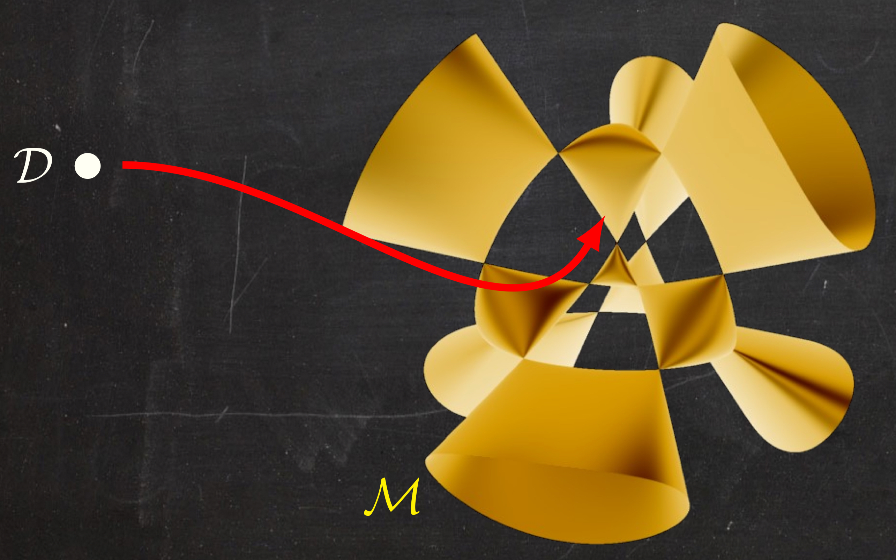
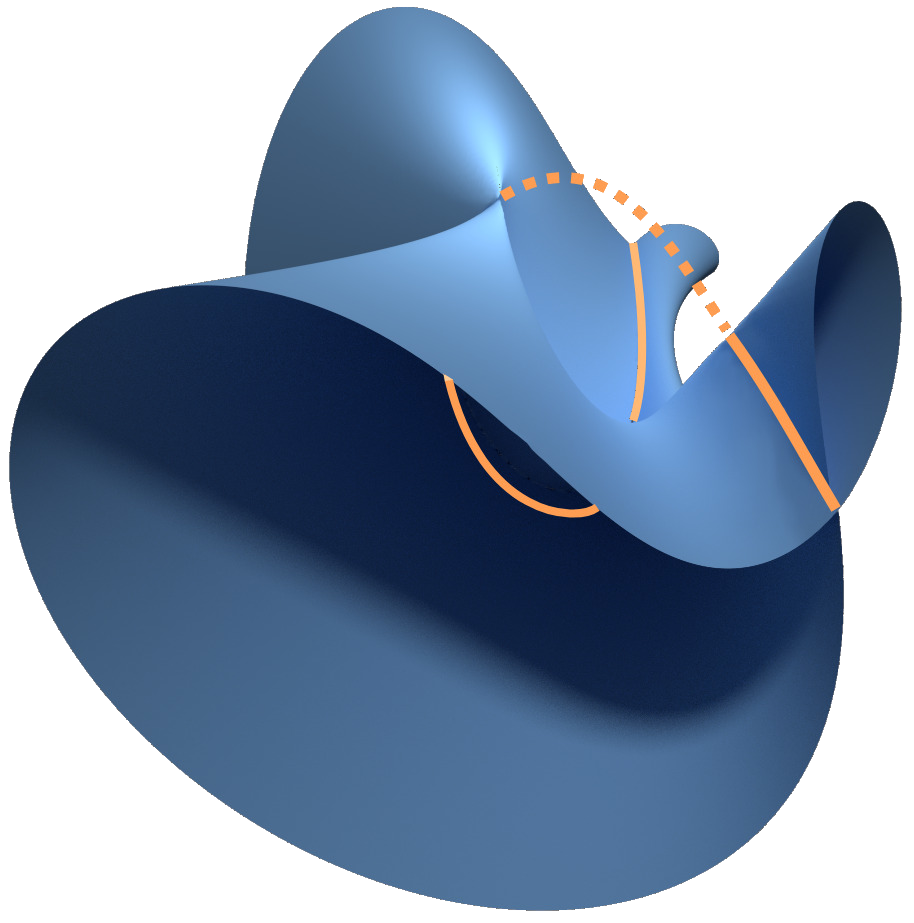
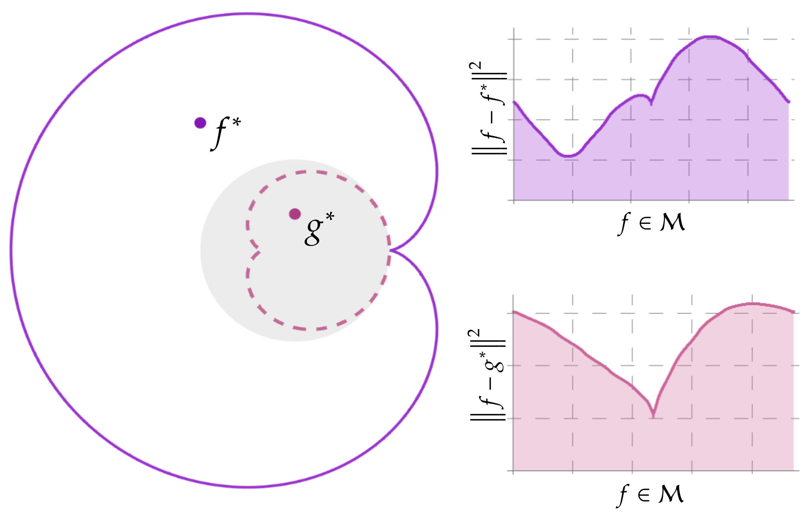
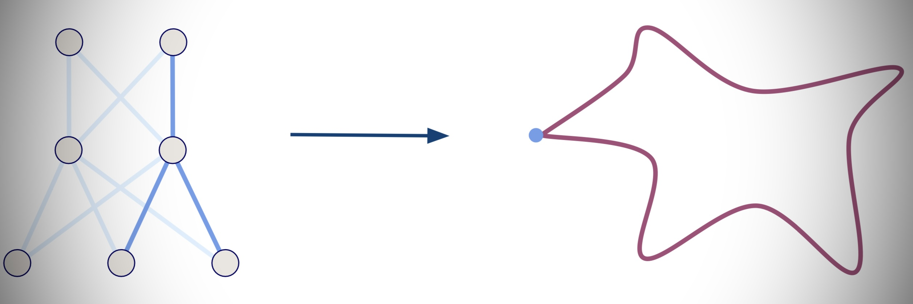
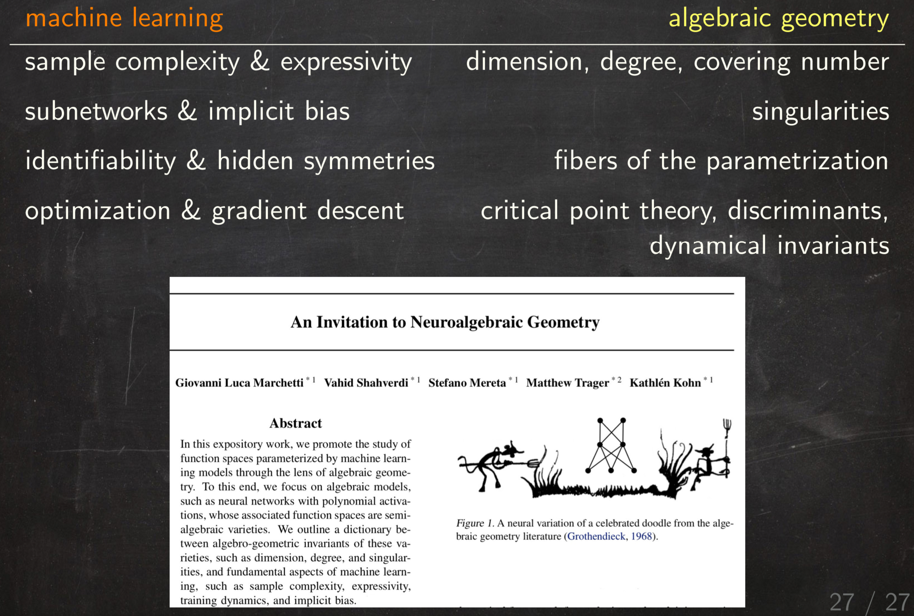

KTH Royal Institute of Technology, Stockholm
Application deadline • May 20, 2026 11:59 PM CET
How to apply• to be announced on May 7
Contact • Kathlén Kohn kathlen@kth.se
The successful candidate will pursue a PhD project at the intersection of algebraic geometry and neural network
theory under the supervision of Kathlén Kohn.
The position is a full-time, 5-year position starting at an agreed upon date in summer or fall 2026. The
successful candidate will be part of the Kathlén Kohn's vibrant research group on Algebraic Geometry in Data
Science and AI, consisting of 2 postdoctoral researchers and 4 PhD students, and several co-advised PhD
students. The position is funded by
WASP and comes with generous travel funds and
networking opportunities. The student will be enrolled in both the
WASP graduate school and
KTH's doctoral program in mathematics.
Interviews for the position will take place on May 25, 2026. Applicants should reserve the date in case they are called for an interview.


One of the most important unsolved mysteries in deep learning is to explain the ability of deep neural networks to work
well on new unseen data. This seems to be particularly true in highly overparameterized machine learning (i.e., beyond
the point where the model can interpolate the training data) such as in modern Large Language Models. This observation
has often been called the double descent phenomenon.
This project aims to 1) develop proofs, based on algebraic geometry, for the double descent phenomenon, and 2) make those proofs
constructive such that they yield explicit bounds on model sizes of when further scaling brings diminishing generalization
gains. The central underlying idea is to approximate neural networks by algebraic (i.e., polynomial) networks, whose
function spaces are semi-algebraic sets embedded in finite-dimensional vector spaces. This algebraic setting enables tools
from (numerical) algebraic geometry that are unavailable for general non-polynomial models.
For example, the blue set in the picture above is the semi-algebraic function space of (small) self-attention mechanisms, the key ingredient in transformers in large language models such as ChatGPT.
Network training can then be interpreted as finding the "closest" point on the function space from the training data (as in the figure with the yellow variety).
We will study the properties of this optimization problem.
For instance, we will investigate the loss landscape via algebraic discriminants (see figure on bottom left)
and the effect of singularities on implicit bias towards subnetworks (see figure on bottom right).
For an introductory reading into the growing area of algebraic neural network theory, see our Invitation to Neuralgebraic Geometry
and neuroalgebraicgeometry.ai.


